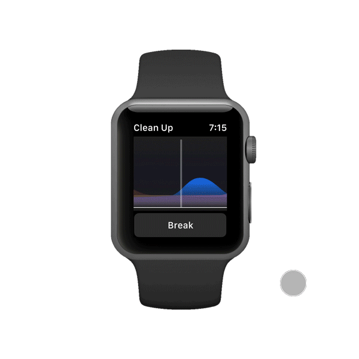
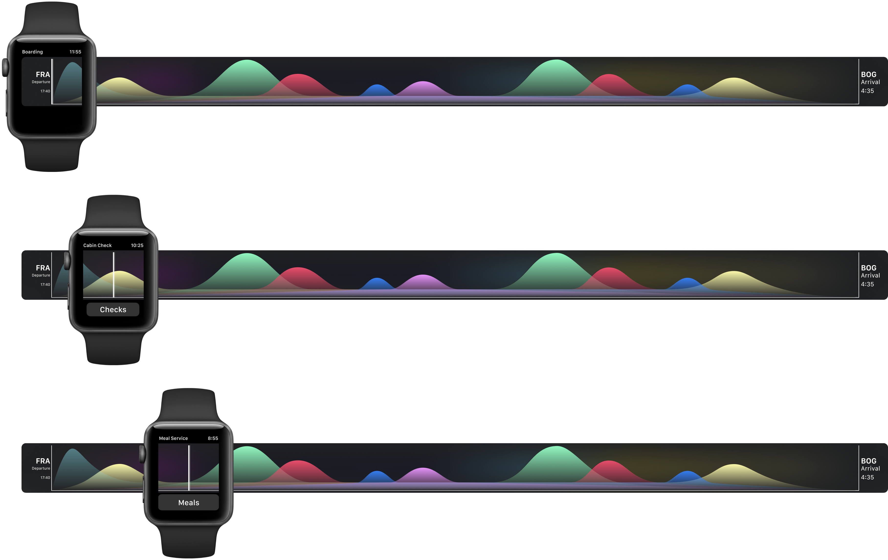
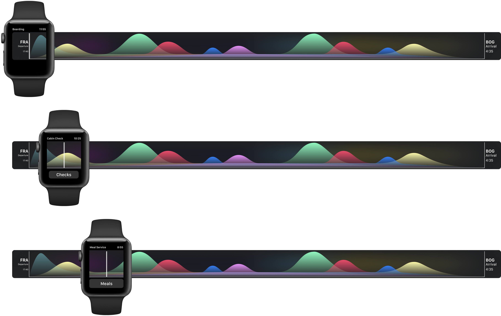

Solution
KEY FEATURES

Onboarding screen
First time users can see an overview of the features that the application provides
First time users can see an overview of the features that the application provides

Flight summary
Access your boarding pass and check the next flight information and time
Access your boarding pass and check the next flight information and time

Overhead Luggage
See which overhead luggage compartment still has space for another passenger's bag
See which overhead luggage compartment still has space for another passenger's bag

Meal service
Choose the aisle you are serving and get the right number of meals to carry based on passenger data
Choose the aisle you are serving and get the right number of meals to carry based on passenger data

Drinks service
Out of wine? Remotely request a new bottle from a crewmate while you continue to serve
Out of wine? Remotely request a new bottle from a crewmate while you continue to serve

Breaks
Rest the right way. Choose your break slot and get all passenger calls diverted while at it
Rest the right way. Choose your break slot and get all passenger calls diverted while at it

Messages and Emergency
Swipe from top for notifications from the pilot. Long press to quickly call for help
Swipe from top for notifications from the pilot. Long press to quickly call for help

Landing
Check the destination and current local time. See you next time.
Check the destination and current local time. See you next time.
Live flight Timeline
The features show up on the below timeline, which acts as a substitue for the home screen. As per the flight schedule, the watch shows the current status, time of flight remaining, and the tasks can be accessed from this timeline 
The features show up on the below timeline, which acts as a substitue for the home screen. As per the flight schedule, the watch shows the current status, time of flight remaining, and the tasks can be accessed from this timeline 